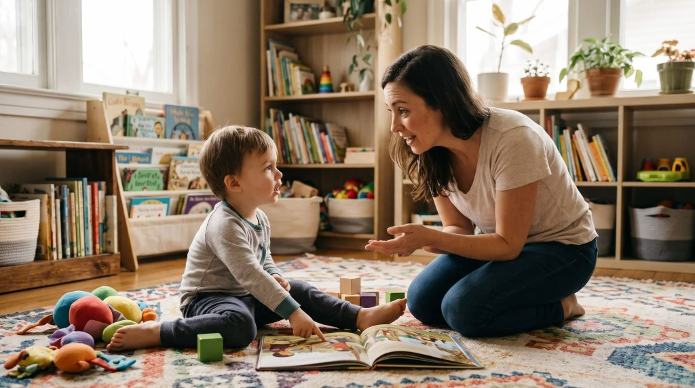

Galvoju remdamasi amerikiečių ankstyvosios intervencijos programa „Trisdešimt milijonų žodžių“ (Thirty Million Words), kurią Čikagos universitete įkūrė vaikų chirurgė ir mokslininkė dr. Dana Suskind.
Griežtos „kvotos“, kiek žodžių privalo mokėti trimetis, programa nenustato. Vietoj to remiasi labai svarbiais Betty Hart ir Toddo Risley 1995 m. tyrimais, parodžiusiais, kaip smarkiai trimečio aktyvusis žodynas skiriasi priklausomai nuo namų kalbinės aplinkos:
~1 100 ir daugiau žodžių
Vidutinis aktyvusis žodynas, užfiksuotas tarp trimečių, augusių kalbiškai turtingoje (dažniausiai didesnes pajamas gaunančių šeimų) aplinkoje.
~700 žodžių
Vidutinis žodynas, pastebėtas tarp darbininkų klasės šeimose augančių trimečių.
~500 žodžių
Vidutinis žodynas, nustatytas tarp mažas pajamas gaunančių šeimų trimečių, kurie iki trejų metų išgirsdavo maždaug 30 milijonų žodžių mažiau.
Kaip dr. Suskind programa interpretuoja šiuos skaičius?
Užuot raginusi tėvus skaičiuoti žodžius ar mokyti vaiką pagal konkretų daugiau nei 1 000 žodžių sąrašą, dr. Suskind pabrėžia, kad „30 milijonų žodžių“ skaičius yra vaiko ankstyvosios kalbinės aplinkos turtingumo metafora.
Jos metodika orientuota į tėvų elgesį, o ne į vaiko tikrinimą, ir remiasi vadinamuoju „3T“ principu (Tune In, Talk More, Take Turns):
Įsiklausykite (Tune In)
Atkreipkite dėmesį į tai, į ką vaikas tuo metu yra sutelkęs dėmesį, ir atliepkite jo susidomėjimą.
Kalbėkite daugiau (Talk More)
Komentuokite kasdienę veiklą vartodami turtingą, vaizdingą ir įvairų žodyną (užuot apsiriboję bendriniais žodžiais ar įvardžiais, tokiais kaip „šitas“ ar „anas“).
Bendraukite pakaitomis (Take Turns)
Įtraukite vaiką į abipusį pokalbį užduodami atvirus klausimus ir suteikdami jam laiko atsakyti.
Trumpai tariant, nors programos pagrindą sudarančiuose tyrimuose sėkmingai besivystančio trimečio orientyru laikoma 1 000–1 100 ir daugiau vartojamų žodžių, pagrindinė dr. Suskind išvada yra ta, kad šį žodyną natūraliai ugdo ir besivystančias smegenis formuoja abipusis pokalbis bei vaizdingas kasdienis bendravimas, o ne mokomosios kortelės ar žodžių skaičiavimas.